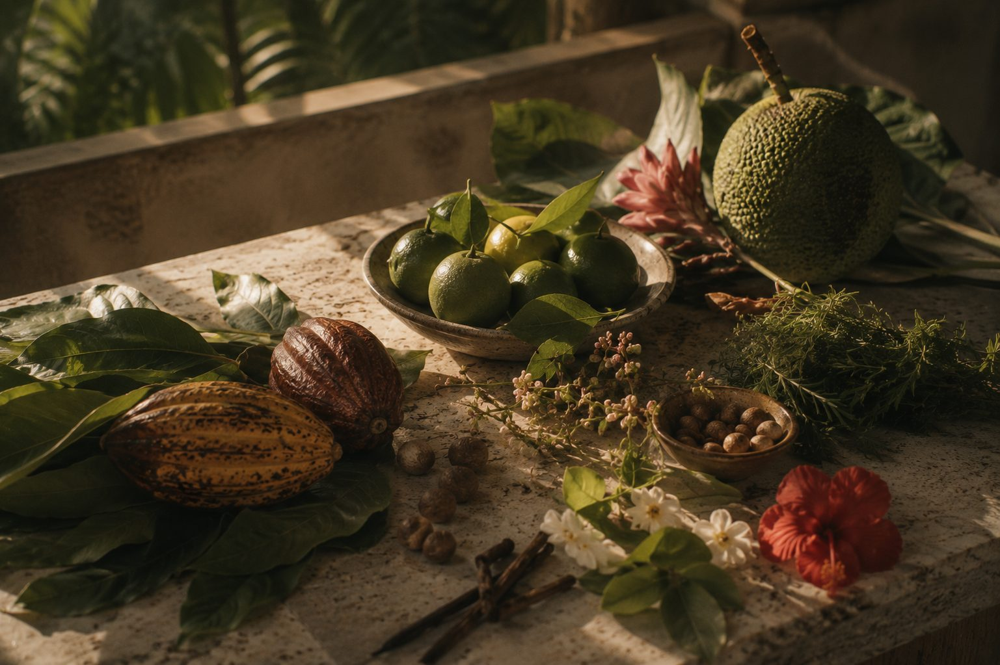
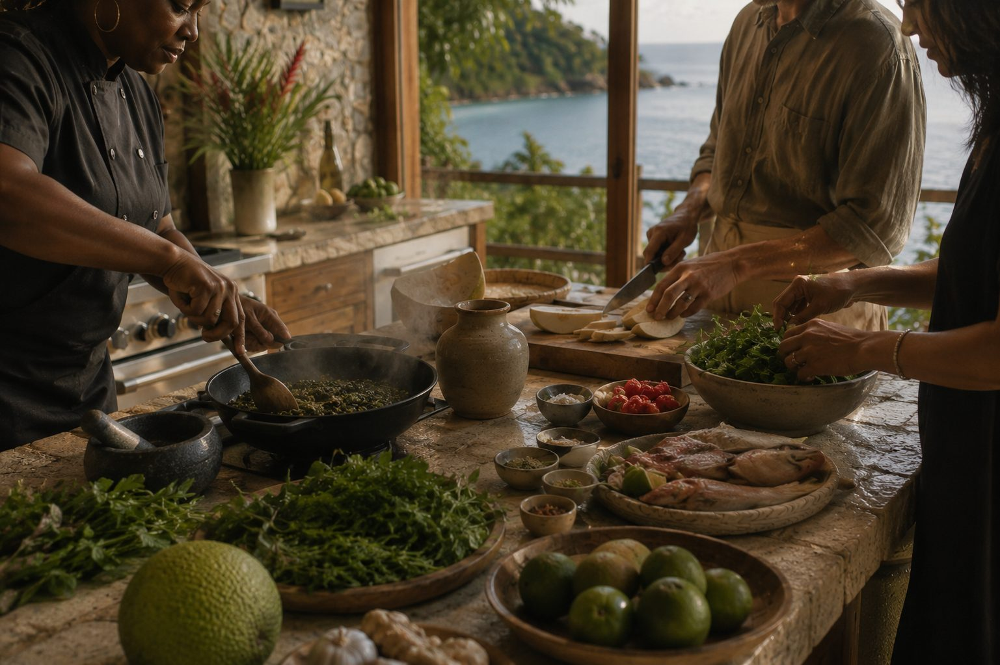
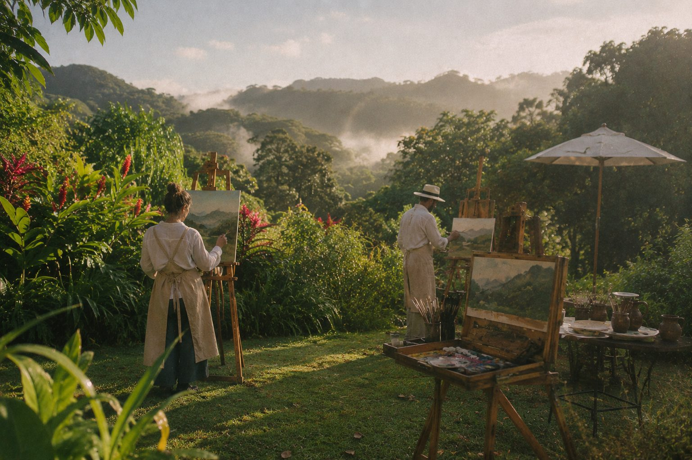
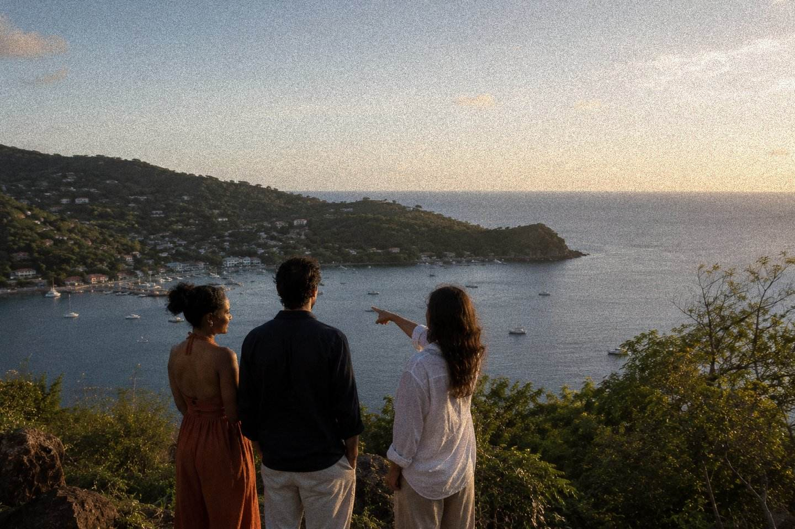
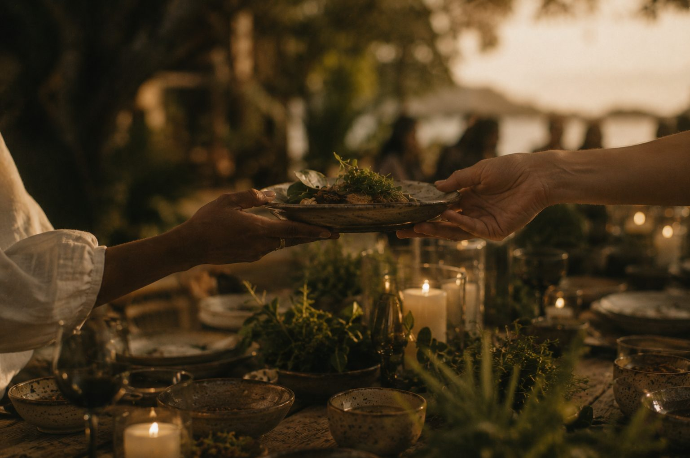

01 · Stargazing & Evening
SALT After Dark
As the islands grow quiet and the heat begins to lift, the evening unfolds slowly beneath some of the Caribbean's darkest skies.
Explore SALT After Dark →Philosophy
Some places are visited. Others are gradually understood.
We believe travel is richer when it feels personal.
Saint Vincent & the Grenadines is celebrated for its sea. We are drawn to everything beyond it: around the table, in the kitchen, beneath the stars, in workshops, gardens and conversations that reveal the islands more quietly.
Every SALT experience begins with the same question: what allows a place to feel remembered, rather than simply visited?
The SALT World
Every SALT experience is shaped around its own setting, rhythm and point of view.
Some begin with a flight. Others around a shared table, beneath a night sky or alongside the hands of a local maker. Each is conceived independently, with its own identity and atmosphere, while belonging unmistakably to the same house.
Together, they reflect a shared philosophy of thoughtful curation, generous hosting and quiet attention to detail.

The Collection
Six experiences, each developed around a different way of encountering Saint Vincent & the Grenadines.
Distinct in character. United by the same philosophy.
How do you want to experience Saint Vincent today?
01 · Stargazing & Evening
As the islands grow quiet and the heat begins to lift, the evening unfolds slowly beneath some of the Caribbean's darkest skies.
Explore SALT After Dark →
02 · Vincentian Tasting
A Vincentian tasting experience shaped by season, place and memory.
Explore Salt & Sorrel →
03 · Vincentian Cooking
A Vincentian cooking experience where the kitchen becomes the gathering place.
Explore SALT Kitchen →
04 · Aerial Safari
A scenic journey through Saint Vincent & the Grenadines, experienced from the air.
Explore SALT Air →
05 · Craft & Botanical
Creative encounters rooted in craft, conversation and the quiet pleasure of making something by hand.
Explore SALT Studio →
06 · Bespoke & Private
A bespoke planning and hosting service drawing from the full SALT collection to create experiences that feel as though they could only happen here.
Explore SALT Private →For Hospitality Partners
The finest hospitality doesn't end at the hotel door.
SALT reveals everything beyond the coastline through a collection of experiences designed exclusively for these islands.
Every collaboration is developed around your guests, your standards and your sense of place, allowing the experience to feel like a natural extension of your property rather than an external excursion.
We partner with hotels, resorts, villas, yacht managers and travel advisors who believe a destination is measured not only by where guests stay, but by how they experience it.

A Keepsake for the Collection
The most meaningful souvenirs are rarely purchased.
The SALT Passport accompanies guests throughout the collection, gathering stamps, notes and memories as each experience unfolds. Over time it becomes a personal record of Saint Vincent & the Grenadines, shaped not by distance travelled, but by moments remembered.
Founder's Note
SALT began with the belief that Saint Vincent & the Grenadines is rarely experienced in full.
Visitors arrive for the sea, and understandably so. Few places in the Caribbean hold such a remarkable meeting of volcanic peaks, coral reefs, and thirty-two islands and cays. Yet beyond the coastline, the islands rise into a misty rainforest where species found nowhere else on Earth still thrive. The islands' character extends far beyond any single view from a boat or a beach, revealing itself instead in gardens, quiet coves, kitchens, workshops and conversations that linger long after the day was meant to end.
Over time, we came to believe that the most meaningful way to experience the islands was not simply by seeing them, but by spending time with the people, flavours, traditions and stories that continue to shape everyday life here.
The isles have always rewarded those willing to look a little more closely: at a meal prepared from memory, a coastline reached slowly, a piece of craft shaped by practiced hands, or a conversation that unfolds without hurry. These are rarely the moments that appear on an itinerary, yet they are often the ones that remain long after a journey has ended.
SALT exists to create space for those encounters. Whether the introduction lasts an afternoon or an entire stay, every experience is designed with care, curiosity and deep respect for the people and places that make these islands what they are.
We are building slowly, in partnership with the people and places that already know these islands best.
Building the Collection
SALT is being built gradually, in partnership with local makers, hospitality partners, aviation operators and producers. Some experiences are already available by enquiry; others are being introduced thoughtfully over time. We believe a collection worth experiencing deserves to be built carefully.
Contact
Whether you're planning a journey, exploring a partnership or simply curious about the collection, we'd be delighted to hear from you.